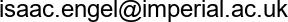

Isaac Engel
- 
- Lab member: 2016-2021
- Imperial College website
Isaac Engel was a PhD student working on Auditory Augmented Reality (AAR) and spatial hearing. He was supervised by Lorenzo Picinali and Dan Goodman.
Publications
Note that only publications as part of the Neural Reckoning group are included here (see external publications below for full list).
2022
-
Engel I, Goodman DFM, Picinali L (2022)
Assessing HRTF preprocessing methods for Ambisonics rendering through perceptual models.
Acta Acustica
2019
-
Engel I, Goodman DFM, Picinali L (2019)
The Effect of Auditory Anchors on Sound Localization: A Preliminary Study.
Immersive and Interactive Audio - + 1 conference paper
External publications
This is a short preview of the publications from other sources (ORCID, Semantic Scholar). Note that publications from work done outside the Neural Reckoning group are included in this list.
2022
- Isaac Engel, L. Picinali (2022)
Reverberation and its Binaural Reproduction: The Trade-off between Computational Efficiency and Perceived Quality
Advances in Fundamental and Applied Research on Spatial Audio [Working Title] - Pongsakorn Siripornpitak, Isaac Engel, Isaac Squires, Samuel J. Cooper, L. Picinali (2022)
Spatial up-sampling of HRTF sets using generative adversarial networks: A pilot study
Frontiers in Signal Processing - Isaac Engel, D. Alon, Kevin Scheumann, Jeff Crukley, Ravish Mehra (2022)
On the Differences in Preferred Headphone Response for Spatial and Stereo Content
Journal of The Audio Engineering Society
2021
- Walter Setti, Isaac Engel, L. Cuturi, M. Gori, L. Picinali (2021)
The Audio-Corsi: an acoustic virtual reality-based technological solution for evaluating audio-spatial memory abilities
Journal on Multimodal User Interfaces - Isaac Engel, Craig Henry, Sebastià V. Amengual Garí, Philip Robinson, L. Picinali (2021)
Perceptual implications of different Ambisonics-based methods for binaural reverberation.
Journal of the Acoustical Society of America - Walter Setti, Isaac Engel, L. Cuturi, M. Gori, L. Picinali (2021)
The Audio-Corsi: an acoustic virtual reality-based technological solution for evaluating audio-spatial memory abilities
J. Multimodal User Interfaces - Walter Setti, L. Cuturi, Isaac Engel, L. Picinali, M. Gori (2021)
The influence of early visual deprivation on audio-spatial working memory.
Neuropsychology
2020
2019